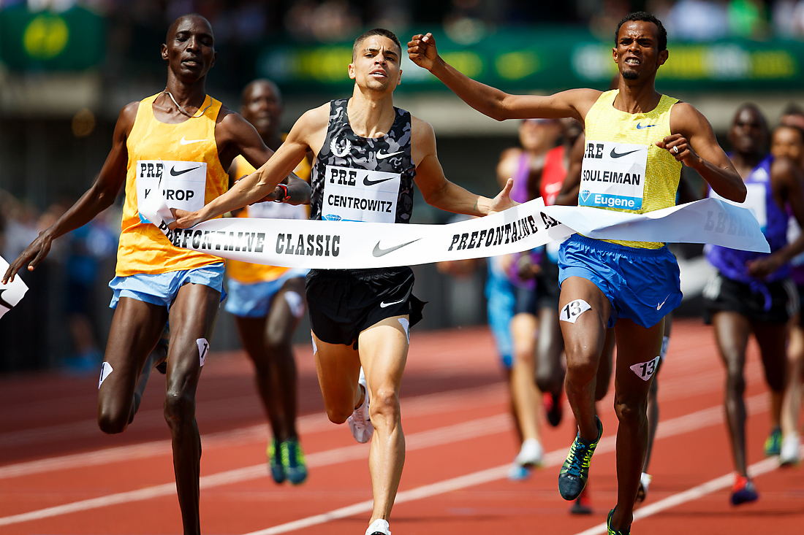

Collected, cleaned, and analyzed data using Python to see if changing conferences in college football leads to better results or success on the field.

Implemented the OpenCV package in Python to create a security camera that detects faces and bodies. The camera is also programmed to record once it detects a face and/or body.
Created a model which predicts titanic survivors using the pandas, numpy, matplotlib, seaborn, and scikit-learn modules of Python.

Created a sodoku gameboard with Python which uses a backtracking algorithm to solve the puzzle. Implemented Pygame to create a GUI of the sodoku board where the user can either solve the puzzle on their own or have the algorithm do it for them.

Ran SQL queries to determine which Airbnb operators in Austin, TX generate the most revenue and are potential clients for a cleaning service.
Implemented pygame to create the classic snake video game. Users will be able to play the game through a GUI generated through python.

Summarized news articles using natural language processing and machine learning in Python via GUI.

Explored and analyzed data through Python to learn the history and discover interesting trends about American runners who have run under four minutes for a mile.